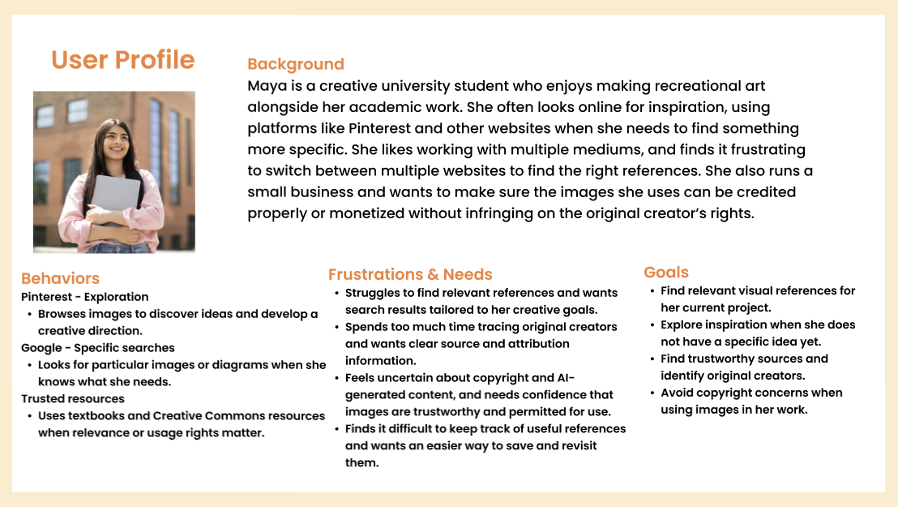
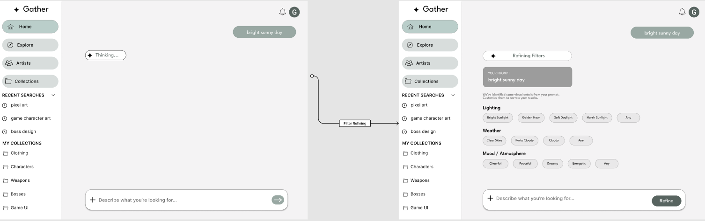
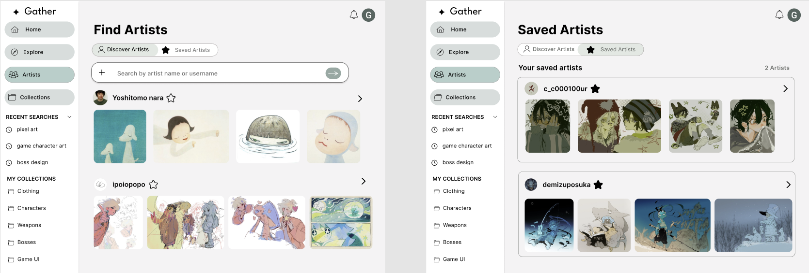
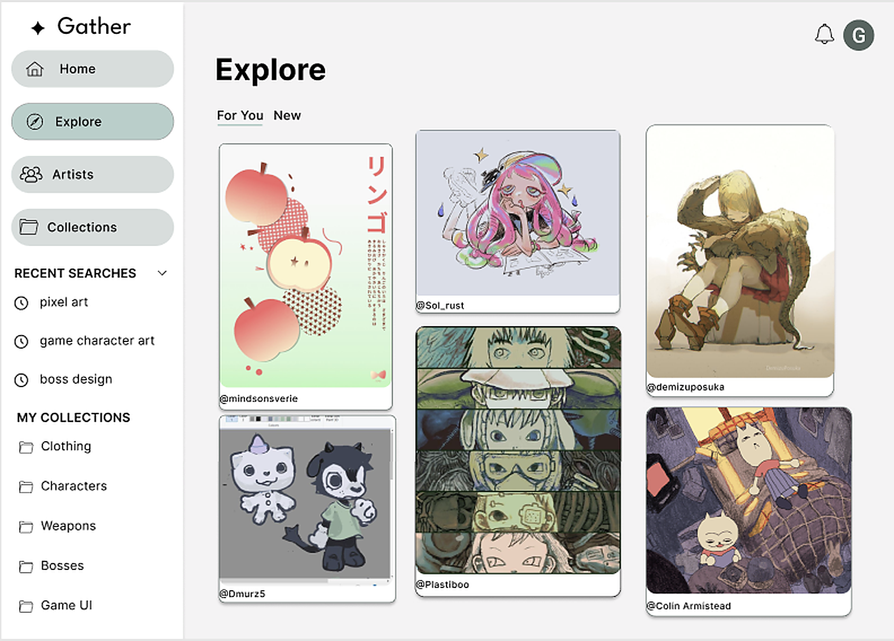

Gather is an AI-powered visual discovery concept that makes finding relevant images and creative inspiration easier. Instead of broad keyword searches, it uses personalized filters to refine results around a person's visual preferences and creative direction, so less time goes to sorting through results that don't fit.
Overview
Making Visual Search Focused, Not Broad
Finding the right reference image is still mostly keyword guesswork: you search, scroll past dozens of near-misses, and jump between Pinterest, Google, and other sites to find something specific. Gather explores how AI-driven personalization and smart filtering could make that experience more intuitive and tailored, surfacing images that match a user's actual visual direction rather than just the words they typed.
I worked on Gather with my partner Julia Hou through the Bits of Good design program over fall 2026. We grounded it in preliminary user research before designing anything, then carried it from a mid-fidelity flow through to the finished high-fidelity designs below.
01 · Research
Who It's For
We started from a user profile built from preliminary research. Maya is a creative university student who makes recreational art and runs a small business, so she needs inspiration and references she can trust and credit properly. Her frustrations shaped Gather directly: tailored results, clear sourcing, and an easier way to keep track of references.

01 · Research
What the Research Told Us
We synthesized the research into four clusters. Together they frame the whole problem: people switch tools depending on whether they're exploring or searching with a goal, references end up scattered and hard to revisit, and trust, attribution, and copyright are a recurring worry.
Finding the right reference
Google works when users already know what they want; Pinterest for open inspiration, but recommendations often miss the mark.
Browsing vs. searching with a goal
People explore without a starting point, then switch to targeted search once they have an idea, across Pinterest, Google, Reddit, and more.
Trust, attribution & copyright
Tracking down proper attribution is time-consuming; users worry about stolen or AI-generated work and identifying original creators.
Managing & revisiting references
References are spread across platforms with different systems, making them hard to save and come back to.

02 · Evolution
Mid-Fi to Hi-Fi
The mid-fidelity flow existed to test one question: does personalized, prompt-driven visual search actually feel better than keyword guesswork? Once that held up, the high-fidelity pass was about making it feel like a product someone would reach for, with real content, real sourcing, and a layout that explains itself. Three changes carried the most weight, and each one traces back to a specific finding from the research rather than a styling preference.
Search & Navigation
The mid-fi screen was a single search box floating on an empty page: it proved the core idea but gave no sense of where you were or where you could go next. The hi-fi version turns it into a real application. A persistent sidebar holds recent searches and saved collections so your context travels with you, and search splits into two clear modes, AI Search for describing what you want in plain language and General Search for the familiar keyword flow. That split came straight from the research: people switch between open browsing and goal-driven searching, so forcing one box to do both was the mid-fi version's weakest point.


Refining a Search
Mid-fi used a wall of fixed dropdowns, the standard filter pattern, but it put the work on the user to know which controls mattered before they had even seen a result. The hi-fi pass flips that around with prompt-based filtering. You describe the direction you want in a phrase like "bright sunny day," and the AI interprets it and surfaces only the controls that fit, such as lighting, mood, and color, instead of every possible option at once. It keeps manual controls for people who want precision while removing the upfront guesswork for people who don't, directly addressing the finding that recommendations and filters often miss the mark when they aren't tied to what the person actually means.


Results & Attribution
In mid-fi, selecting a result opened a placeholder detail panel, enough to test the layout but empty of the information that actually builds trust. The hi-fi design fills it with real sourcing. Each result shows a match percentage and a short reason it was surfaced, so the ranking is transparent rather than a black box, and opening an image reveals the true creator, license, and a ready-to-use citation. This was the single most important change: attribution came up again and again in research as a genuine pain, with users worried about stolen or AI-generated work, so making the creator and license part of every result, not an afterthought, is where the concept earns its keep.


03 · High-Fidelity Design
The Finished Experience
These are the final high-fidelity designs, walked through in the order a real session tends to follow, from the first search to saving a reference you can come back to. Each screen maps to a need the research surfaced, so the gallery doubles as a check that the four insight clusters, finding references, browsing versus searching, trust and attribution, and managing what you find, each landed in something concrete.
Search
Two ways to look, side by side. AI Search takes a plain-language prompt and reads intent; General Search keeps the familiar keyword flow for when you know exactly what you want. The persistent sidebar keeps Explore, Artists, and Collections one click away, so searching never feels like a dead end.
Results & Attribution
Every result carries a match percentage and a short reason it surfaced, so the ranking is never a black box. Opening an image reveals the real creator, source, license, and a ready-to-use citation, turning the research team's biggest pain, trustworthy attribution, into a built-in part of each result.

Artist Discovery
Find creators by style, see their work gathered in one view, and save the ones worth following. It shifts Gather from a one-off image search toward an ongoing relationship with the artists behind the references you keep coming back to.

Explore
A For You and New feed for open-ended browsing, built for the moments when you have no fixed idea yet and just want to wander into inspiration before committing to a search.

Collections
Save, name, delete, and pin boards so references stay organized instead of scattered across tabs and apps. It answers the research finding that people lose track of inspiration as fast as they find it.
Where it landed. Gather went from a research-backed idea to a finished high-fidelity design: a user profile and four insight clusters that each map to a real screen. The clearest thread is attribution, the research surfaced it as a genuine pain, and the final design makes a creator, source, and license part of every image rather than an afterthought.